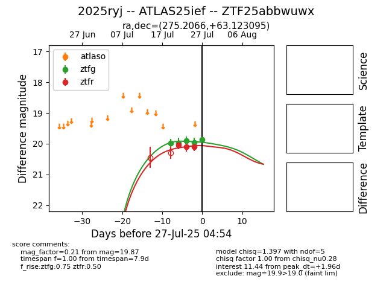

Target 2025ryj at 2025-07-27 04:54, see:
FINK: fink-portal.org/2025ryj
Lasair: lasair-ztf.lsst.ac.uk/objects/2025ryj
ALeRCE: alerce.online/object/2025ryj
TNS: wis-tns.org/object/2025ryj
YSE: ziggy.ucolick.org/yse/transient_detail/2025ryj
alt names
ZTF25abbwuwx (ztf,fink)
2025ryj (tns,yse)
ATLAS25ief (atlas)
coordinates:
equatorial (ra, dec) = (275.2066,+63.12309)
galactic (l, b) = (92.6207,+27.40703)
photometry
last ztfg=19.87, ztfr=20.09
5 ztfg, 3 ztfr detections
